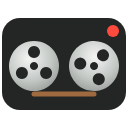

Allow the microphone
Tab Recorder mixes your voice into recordings. Choose “Allow while visiting the site”, not “Allow this time”, so Chrome remembers it.
Waiting for your answer…

Tab Recorder mixes your voice into recordings. Choose “Allow while visiting the site”, not “Allow this time”, so Chrome remembers it.
Waiting for your answer…